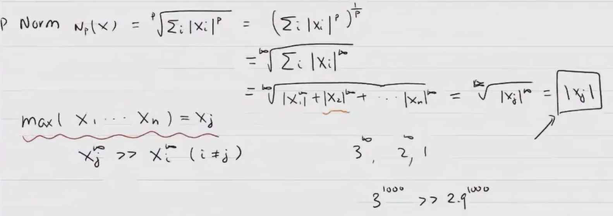
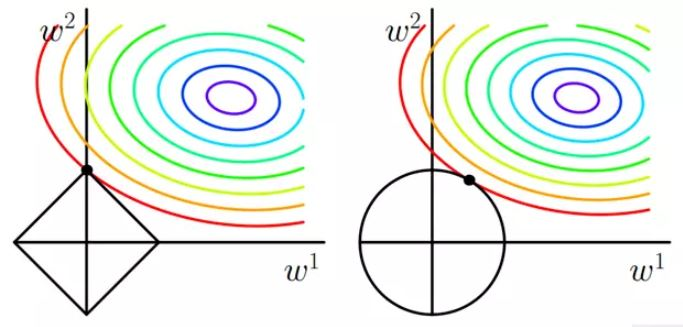

L范数¶
-
L0范数：向量中非零元素的个数
在机器学习中，如果使用L0范数即希望大部分权重w为0，即w向量时稀疏的，可以用于特征选择，通过最小化L0，来寻找最优的稀疏特征。然而L0范数的优化问题时一个NP Hard问题，故而通常L1的最优化问题通常会放宽到L1，L2下的最优化。
-
L1范数：向量中每个元素的绝对值之和
曼哈顿距离
Lasso回归
-
L2范数：向量元素绝对值的平方和再开方
欧几里得距离
Ridge回归

-
LP范数

LP-Norm推导：

LP-Norm最终是：\(max(x_1, x_2,..,x_n)\)中的绝对值最大的元素，即二维是一个正方形。
L1与L2正则化¶
-
为什么需要正则化？
-
几何解释：解空间

解空间：损失函数的等高线与圆形正方形相交的区域。
L1：函数连续，但存在不可导点。在特征为二维时，约束线是一个菱形，等值线大概率最先与顶点相交，在这种情况下有一个维度的特征就会为0，这就带来了稀疏。当特征的维度变高，坐标轴上角与边都会变多，这更会加大等值线与他们先相交的概率，从而导致了稀疏性。
L2：函数连续且处处可导。它的约束线是一个圆形，等值线可能与它任意一个位置的点首先相切，这个切点在坐标轴上的概率大大减小，从而不太容易导致稀疏。
-
下降速度

当w较大时，L2的斜率大于L1，L2正则化权重衰减地比L1正则化快；w小时，L2斜率小于L1，L1正则化权重衰减地比L2正则化快。因此L1正则化最终会导致模型保留了重要的大权重，不重要的小权重都被衰减为0，产生了稀疏。而L2正则化可以通过限制权重大小让模型变得简单，但却不会导致稀疏。
引用¶
1. l1 and l2 regularization 2. L0、L1、L2范数在机器学习中的应用